Part 1(Task 1)
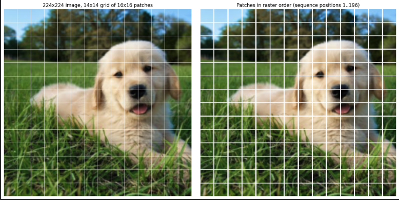
Patch count and sequence length:
A 224 × 224 image after clipping the edges is split into 16 × 16 patches gives a 14 × 14 grid, so 196 patches ordered by rater ordering. Adding the CLS token gives a sequence length of 197. Each token is 768-dimensional in ViT-B/16, so the encoder input has shape (1, 197, 768).
Patch projection.
Each patch is flattened (16 × 16 × 3 = 768 values) and mapped by one shared learned linear layer into the model's embedding space. This turns pixel blocks into tokens the transformer can process, and it keeps the sequence short: attending over 196 patches is far cheaper than over 50,176 pixels, since attention cost grows quadratically with length.
Positional embeddings.
Self-attention is permutation-invariant, and the patch projection carries no location information. A learned positional vector is added to each of the 197 tokens so the model knows where each patch came from and can learn spatial relationships.
CLS token.
A learnable vector prepended to the sequence that doesn't correspond to any image region. Through attention it collects information from all patches which is a variable depending on the attention, and its final-layer output is passed to the classification head. This gives the prediction a single place to be read from.
Visualization vs. learned projection.
My visualization is a parameter-free reshape: it splits the image into pixel squares. The model's projection is a learned transformation applied to those squares, producing 768-dimensional embeddings that can't be viewed as images. I confirmed that my patches are the real inputs to that layer by flattening them and applying the weights and bias of `conv_proj` manually. The result matched the model's own patch embeddings (`torch.allclose` returned True).
Part 1(Task 2)
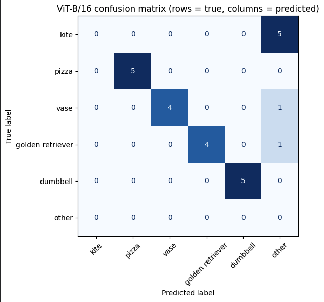
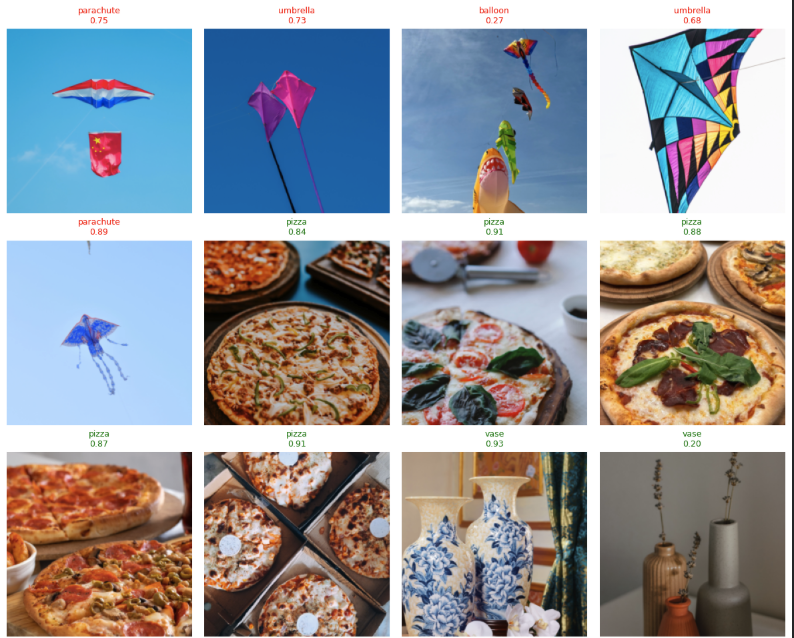
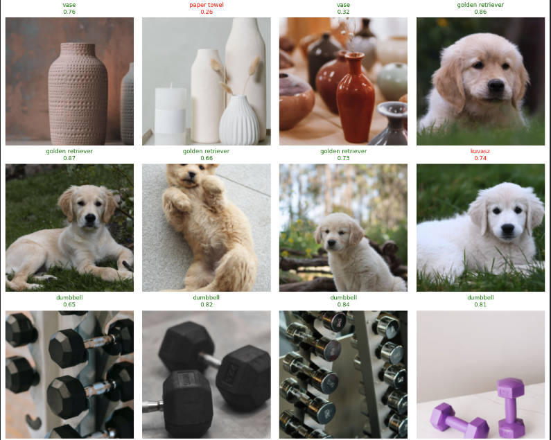
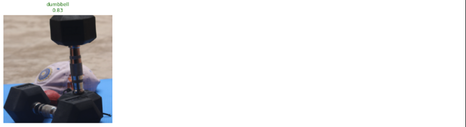
Collection and label mapping:
I collected 25 images, 5 for each of five categories: kite, pizza, vase, golden retriever, and dumbbell. Each category maps to a single ImageNet class (full table in label_mapping.csv, for example pizza → 963). All images are from Pexels, and the source, URL, and license for each are in sources.csv. I ran inference with vit_b_16 (IMAGENET1K_V1) and the checkpoint’s own preprocessing: resize to 256, center-crop to 224, normalize.
Results:
Top-1 accuracy was 72% (18/25) and top-5 accuracy was 80%. Pizza and dumbbell were 5/5, vase and golden retriever were 4/5, and kite was 0/5. In the confusion matrix every error lands in the “other” column, so the model never mixed up two of my five categories. It just predicted classes outside the set (parachute, umbrella, balloon, paper towel, kuvasz). Leaving kite out, accuracy would be 18/20 (90%). With only 25 images I wouldn’t read much into the exact percentages.
Successful examples:
A vase was predicted as vase with probability 0.93, and the next class was close to zero. It’s a clear, centered object with a recognizable shape. A pizza was predicted as pizza at 0.91, with bagel second at only 0.01. Pizza was the most consistent category overall (0.84 to 0.91 across all five images). I think that’s because it has a distinctive look and not many similar ImageNet classes.
When the model was less sure, its second choice was usually a close neighbor. For dumbbells it was barbell, and for the golden retrievers it was Labrador retriever.
Incorrect and uncertain examples:
Kite (all 5 wrong). For example, the kites was predicted as parachute at 0.89, and another as balloon at 0.27. I later looked into it since it had the most disappointing results and figured, it is a labe problem and not a vision probelem. The ImageNet kite class is the bird, not the toy, so the correct answer wasn’t available to the model. It picked the closest looking things, like parachutes, balloons and umbrellas. The 0.89 confidence on parachute also shows that a high softmax score doesn’t mean the answer is right.
One golden retriever was predicted as kuvasz at 0.74, with golden retriever second at 0.13. Kuvasz is a pale-coated breed,so it probably pushed it that way. It’s a fine-grained mistake between similar breeds, and the right label was still second. One vase had the least confident prediction. The best guess was paper towel (0.26), toilet tissue (0.24), and vase (0.18) were nearly tied, with a margin of about 0.01. Some correct predictions were also shaky. One vase image was right at only 0.20, with corkscrew close behind at 0.14.
How the fixed output categories limit the questions you can ask:
The ViT is a closed-set classifier. It has 1000 output units, one per ImageNet class, so the only question it can answer is which of those 1000 labels fits an image best. The kite results show the problem well. Kite exists in ImageNet only as a bird, so the model had no way to name the toy and gave the nearest visual matches instead. Softmax also forces the probabilities to sum to 1 over the 1000 classes, so there’s no “none of the above” option, and a wrong answer can still come with high confidence. Each image gets a single label, which means things like actions, counts, or relations (“a person flying a kite”, “two dumbbells”) can’t be asked unless they happen to be their own class. The label granularity was also decided by the dataset creators. ImageNet has lots of dog breeds, so golden retriever vs. kuvasz is a question the model has to answer, but plenty of everyday objects have no class at all. Adding a new category would mean changing the output layer and fine-tuning on labeled examples, which is a big contrast with CLIP, where the candidate labels are just text you provide at inference time.
Part 2(Task 1)
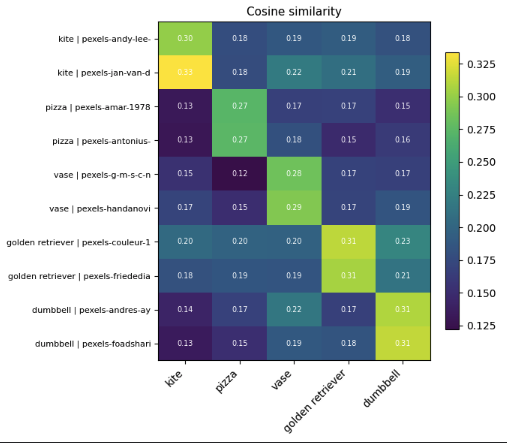
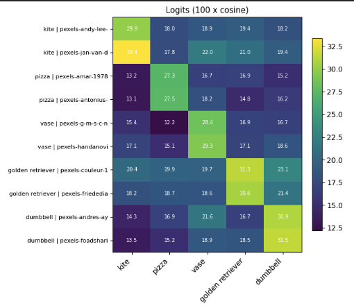
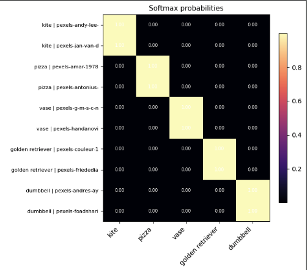
Implementation
I loaded OpenAI’s CLIP ViT-B/32 and reused the same 25 images from Part 1. The five candidate texts used the template “a photo of a {category}”. I encoded images and texts with CLIP’s own encoders (512-dimensional embeddings) and then did the similarity calculation by hand:
L2-normalized all embeddings (checked that the norms were 1.0000). Computed the 25 × 5 cosine similarity matrix as image_emb @ text_emb.T. Multiplied by the checkpoint’s learned scale, logit_scale.exp(), which was 100.00, to get logits. Applied softmax across the five texts for each image (rows sum to 1) and took the argmax as the predicted category.
Comparison with the built-in output:
I also ran clip_model(images, texts) and compared its logits with mine. The largest absolute difference was 1.14e-05 and torch.allclose returned True, so my calculation matches what the model computes internally. The tiny difference is just floating-point rounding. With the prompt “a photo of a {category}”, zero-shot accuracy was 100% (25/25), including all five kite images, which the ViT got wrong in Part 1. With only 25 images this doesn’t say much about CLIP in general.
Heatmaps:
I plotted cosine similarities, logits, and softmax probabilities for 10 images (2 per category). In all three panels, the biggest value in each row is in the column of the true category. Matching cosine similarities were about 0.27 to 0.33, and non-matching ones about 0.12 to 0.23. The logits are exactly 100 × cosine, so they spread out to roughly 12 to 32. The probabilities are almost exactly 1 for the right text and 0 for the rest, because a cosine gap of about 0.1 turns into a gap of about 10 logits after scaling. The three panels show the same ranking at three different scales.
Cosine similarity vs. logits vs. softmax probabilities:
Cosine similarity measures how closely two embeddings point in the same direction, from -1 to 1. It only depends on that one image and that one text. For matching CLIP pairs it’s small, so candidates differ by only a few hundredths.
Logits are the cosine similarities multiplied by the learned scale (100.00 here). That doesn’t change the ranking, but it stretches the gaps so softmax can give a meaningful distribution. Without the scale, a 0.11 cosine gap would give nearly uniform probabilities.
Softmax probabilities turn one image’s logits into a distribution over the candidate texts that sums to 1. Unlike the other two, they depend on which other texts are in the comparison.
Why softmax probabilities depend on the candidate texts:
Softmax divides each exponentiated logit by the sum over all candidates, so the probabilities have to total 1 over whatever set you supply. Change the set and every probability shifts, even though the image and its cosine similarities stay the same. I tested this on the kite image pexels-andy-lee-222330306-30232828.jpg. With all five candidates, “kite” got probability 1.000 (cosine 0.299 vs. 0.194 for the next best text). With only “kite” and “pizza” it stayed at 1.000, because the gap of about 10 logits makes softmax saturate. So I decided to remove “kite”, the cosine similarities of the other texts didn’t change, but their probabilities did: golden retriever went from about 0.000 to 0.458, vase to 0.280, dumbbell to 0.149, and pizza to 0.112. So a softmax probability is a relative score within the chosen label set, not an absolute measure of how well an image matches a text. If the correct text isn’t a candidate, a wrong one still gets a big share, similar to how the ViT in Part 1 gave 0.89 to “parachute” for a toy kite.
Part 2(Task 2)
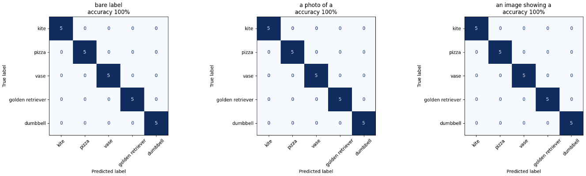
Setup and results
I compared three templates, “{category}”, “a photo of a {category}”, and “an image showing a {category}”, on all 25 images, using the same CLIP ViT-B/32 weights and image embeddings each time. Only the text embeddings changed. Accuracy was 100% (25/25) for all three templates, all three confusion matrices are perfectly diagonal, and no image’s predicted category changed with the wording.
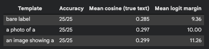
Where wording changed the score
Because accuracy was identical, I compared the logit margin (true text’s logit minus the best wrong text’s logit; higher means more decisive). Margins generally rose with fuller phrasing, but not uniformly:
Kite gained the most: the category mean went from 8.57 to 10.83 to 11.56. For pexels-jan-van-der-wolf-11680885-17056455.jpg, the margin rose from 8.41 to 11.37 to 12.40. A lone “kite” may be ambiguous between the bird and the toy, while a caption-style phrase reads more like CLIP’s training text, though this experiment can’t separate that from a general benefit of caption-style prompts. Pizza was not monotonic. For pexels-dariogarcia-6068717.jpg the margin went 11.04, 8.65, 12.60, so “a photo of a” was worse than the bare label. The category means for pizza and golden retriever show the same dip, so no template was best everywhere. Golden retriever had the smallest margins (7.5 to 9.7). Still, every margin I looked at was well above 0, so wording changed how confident the model was, not what it chose. Why a prompt change differs from fine-tuning
Changing the prompt only changes the input to the text encoder, so the text embeddings change while the weights stay identical. I confirmed this by comparing the sum of all parameters before and after (Weights unchanged: True). There’s no loss, gradient step, or labeled data, and a wording change can be undone instantly. Only fine-tuning updates the weights by gradient descent on labeled examples, which permanently changes the model and can overfit a small dataset like ours or hurt prior knowledge.
Comparison with Part 1
CLIP scored 25/25 and the ViT 18/25, but this doesn’t show that either model is better in general:
Candidate sets: the ViT chose among 1000 labels, CLIP among five texts I supplied (chance of 20% vs. 0.1%). Label definitions: the ViT’s five kite errors come from ImageNet’s kite being a bird, while CLIP’s “kite” text could mean the toy. Training: the ViT used supervised cross-entropy on ImageNet-1k, CLIP used contrastive learning on about 400 million web image–text pairs. Sample: 25 images in five categories I chose is too small to rank models.
What it does show is a difference in setup: the ViT’s questions are fixed at training time, while CLIP lets me define the question at inference time through the prompt.
Part 2(Task 3)
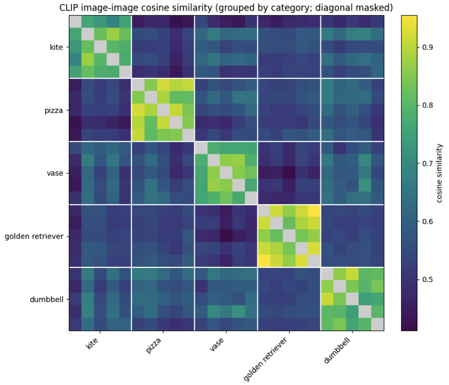
I normalized the CLIP ViT-B/32 image embeddings and computed a 25 × 25 cosine similarity matrix as emb @ emb.T, with images sorted by category. The diagonal (each image compared with itself, about 1.0) is masked in the heatmap so it doesn’t stretch the color scale. Image–image similarities are much higher than the roughly 0.3 image–text values from Task 1, because both vectors come from the same encoder.
What the matrix shows:
Images are much closer to others in their own category than to images from other categories. The mean similarity within a category was 0.832 (excluding self) and between categories 0.551. For all 25 of 25 images (100%), the nearest neighbor came from the same category. Even the highest between-category average (vase–dumbbell, 0.604) is below the lowest within-category average (kite, 0.780). Golden retriever was the tightest category (0.890), then pizza (0.869), dumbbell (0.817), vase (0.803), and kite (0.780). The closest pairs of categories were vase–dumbbell (0.604), pizza–dumbbell (0.587), and kite–dumbbell (0.577). The least similar were vase and golden retriever (0.493).
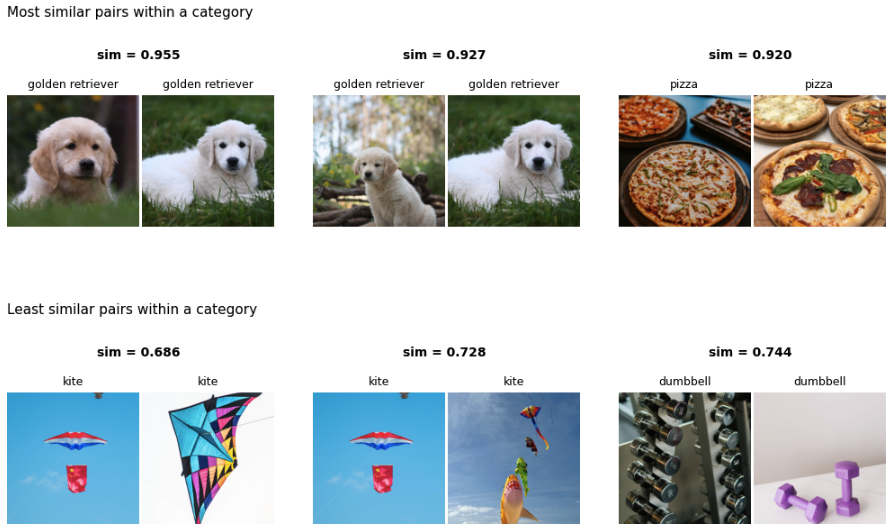
Similar images within a category:
The most similar pairs were two golden retriever puppy pairs (0.955 and 0.927) and a pizza pair (0.920). Both puppy pairs show a young dog centered in the frame on green grass, and the pizza pair shows several round pizzas on wooden boards, photographed close-up from above. In each case, the object, framing, and background all match, so these pairs can’t tell me which factor drives the similarity.
The least similar pairs were mostly kites (0.686 and 0.728), then dumbbells (0.744). The red-white-blue kite on a clear blue sky is far from a large teal and black kite on a white background, and from a photo of several kites (including a shark-shaped one) among clouds. The two dumbbell images differ in setting: a gym rack of black-silver dumbbells vs. two purple dumbbells on a white surface. So images drift apart within a category when the background, number of objects, color, and object style differ. This fits the kite category having the lowest within-category mean, since its images vary the most.
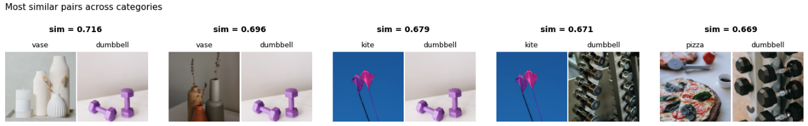
Unexpectedly similar images across categories:
The top cross-category pairs were vase–dumbbell (0.716 and 0.696), kite–dumbbell (0.679 and 0.671), and pizza–dumbbell (0.669). Every one of the five pairs includes a dumbbell image, and the purple dumbbell photo appears in three of them. What they share seems to be mostly non-object properties:
Vase–dumbbell: both are minimal, muted tabletop still lifes with a pale neutral background. Kite–dumbbell (0.679): the pink-purple kite and the purple dumbbells share a strong purple hue. Kite–dumbbell (0.671): I can’t explain by color or background. It shows a rack filling the frame with repeated objects, and the pizza image is a tight close-up, however it might be caused due to the round shapes of the dumbell heads and the toppings of the pizza, but composition or crop may also play a role. This is a guess from looking at the images, and I didn’t test it.
Notably, the top two cross-category pairs (0.716 and 0.696) are more similar than the least similar kite pair (0.686), so individual pairs can overlap even though the category structure is clear on average.
Main object, background, color, or other properties?
The main object seems to be the strongest factor: the within/between gap is large (0.832 vs. 0.551) and nearest neighbors are 100% correct. But the cross-category pairs show that scene style, color, and composition also affect the embedding when the objects differ. Within categories, object and background are confounded in my set (puppies all on grass, pizzas all on tables), so I can’t separate the two from this data.
What CLIP’s representation captures here
In my examples, CLIP’s image embedding mainly organizes images by object category, but it also reflects background, color, styling, and framing. Images of different objects can be fairly close when they share these properties, as with the muted still-life vases and dumbbells. The sample is small: 25 stock-style photos in five visually distinct categories I chose, usually with a clear main subject. That likely makes within-category similarity higher than it would be for cluttered everyday photos, so these findings describe this collection only.
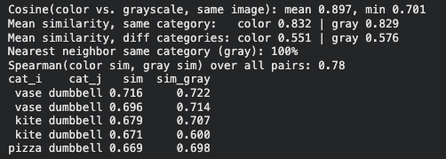
To test color directly, I converted all 25 images to grayscale (three identical channels), re-embedded them, and compared. Removing color changed each image’s embedding noticeably (cosine between an image and its grayscale version: mean 0.897, minimum 0.701), but the category structure stayed intact. Within-category similarity was unchanged (0.832 vs. 0.829), between-category similarity rose slightly (0.551 to 0.576), every nearest neighbor was still in the same category (100%), and the pair similarities stayed strongly rank-correlated (Spearman 0.78). Among the top cross-category pairs, four of five stayed the same or increased in grayscale, and only one kite–dumbbell pair dropped clearly (0.671 to 0.600). So color seems to contribute modestly, helping separate categories, but it is not what groups the images. Grayscale also changes contrast and saturation, so this isn’t a perfectly clean manipulation, and with 25 images I treat the differences as descriptive.
Part 3(Task 1)
Hypothesis
When two captions share the same object and differ only in the action, CLIP will select the correct caption more often than chance (50% per image), but with small similarity margins, and the two captions will be much more similar to each other than captions about different objects.
This hypothesis can be falsified: very high accuracy with large margins would contradict it, and so would chance-level accuracy.
Design
Data: HICO-DET (Chao et al., 2018), a dataset of images annotated with human–object interactions, i.e. a verb, an object and bounding boxes for the person and the object.
Comparison set: two images of the same object category showing different annotated actions, plus two captions. A set has a 2 × 2 image–text similarity matrix.
Sets and images: 12 sets, 24 images (the task requires at least 10 and 20).
Model: CLIP ViT-B/32 (openai/clip-vit-base-patch32).
Correct match: image A belongs with caption A, and image B with caption B.
Data source and image-selection rules
Images were taken from the test split of HICO-DET (9,658 images). The dataset contains 80 object categories and 116 verbs (excluding "no interaction"), giving 520 verb–object classes. An image was eligible only if it met all of these rules:
- One object type appears in the annotated interactions.
- At most one person–object pair. Annotations whose person box and object box both overlap an earlier annotation (IoU ≥ 0.5) are merged into one pair, because HICO often labels one person–object pair with several verbs and slightly different boxes.
- Everyone present is doing the same thing (identical verb set), so the label is unambiguous.
- Visibility: the person's box covers at least 8% of the image and the object's box at least 1%.
- Interactions marked invisible and the "no interaction" class are excluded.
Of the 9,658 test images, 5,268 satisfy rules 1–3 and 4,009 also pass the size filter. This pool of 4,009 images is the sampling frame.
Dataset:
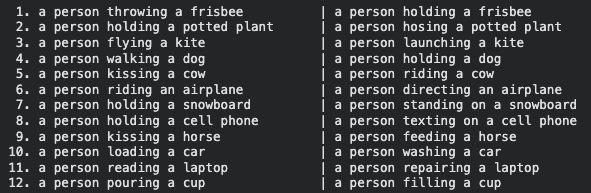
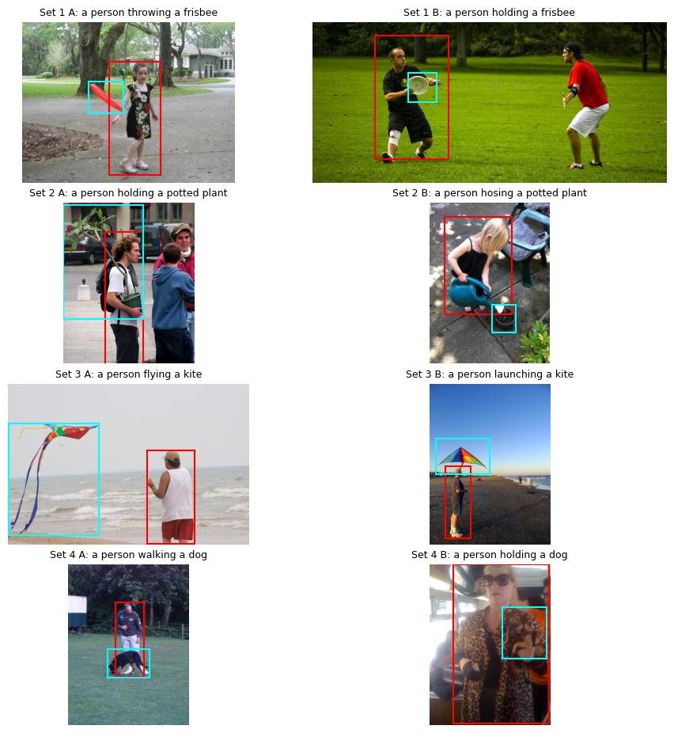
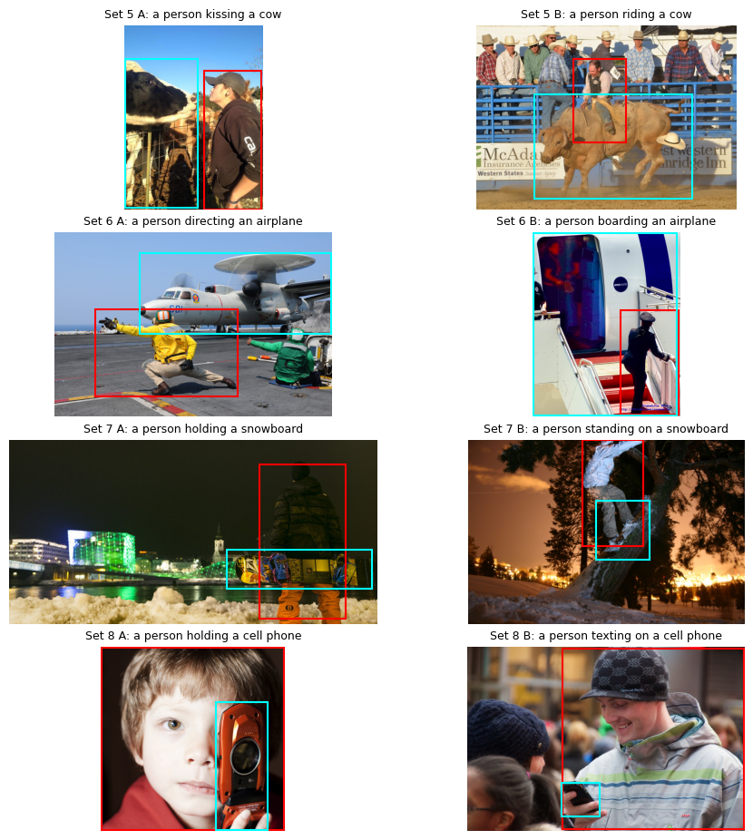
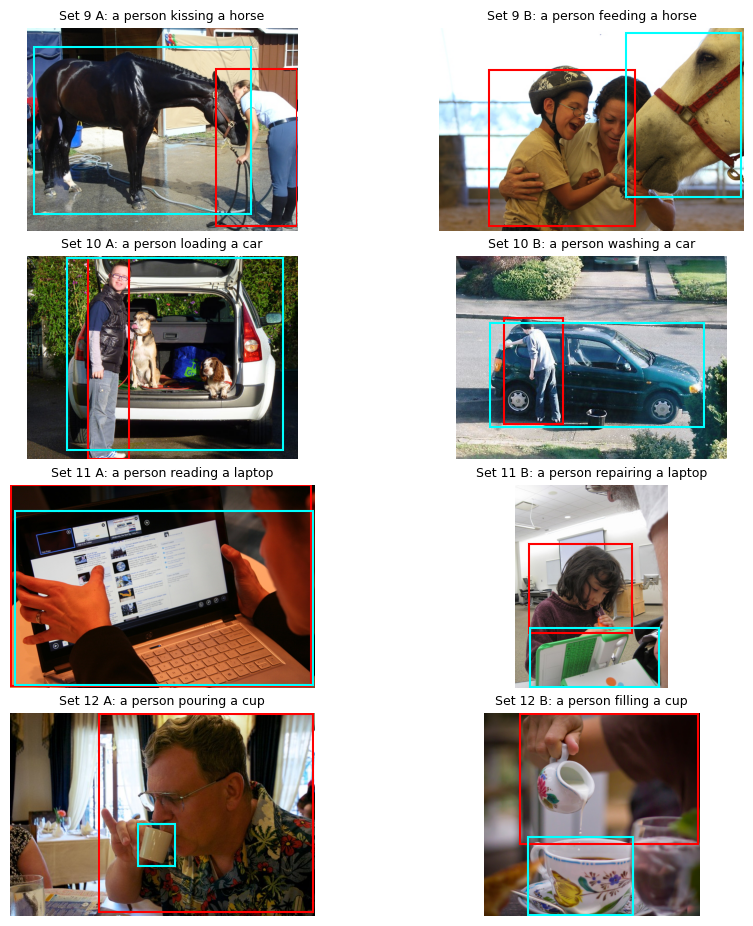
After resampling set 6:
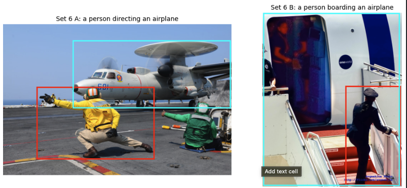
Part 3(Task 2)
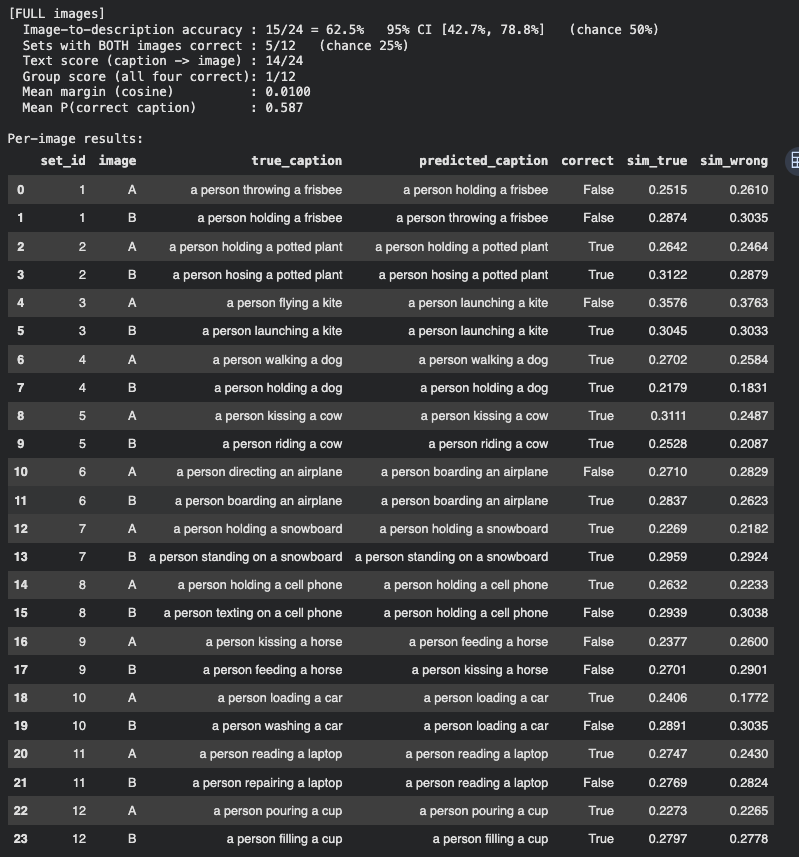
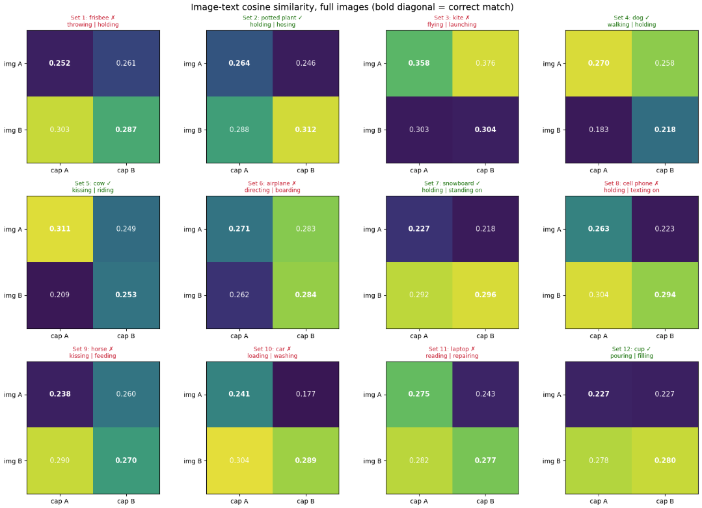
Brighter cells (more yellow/green): Higher similarity score. CLIP considers the image and caption a closer match.
Darker cells (more purple): Lower similarity score. CLIP considers the image and caption a weaker match.
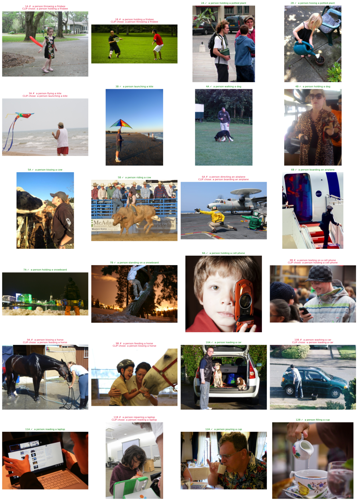
Both images correct (largest margin first): [5, 4, 2, 7, 12]
At least one image wrong (worst first) : [9, 1, 3, 6, 11, 8, 10]
--- SUCCESS: set 5 ---
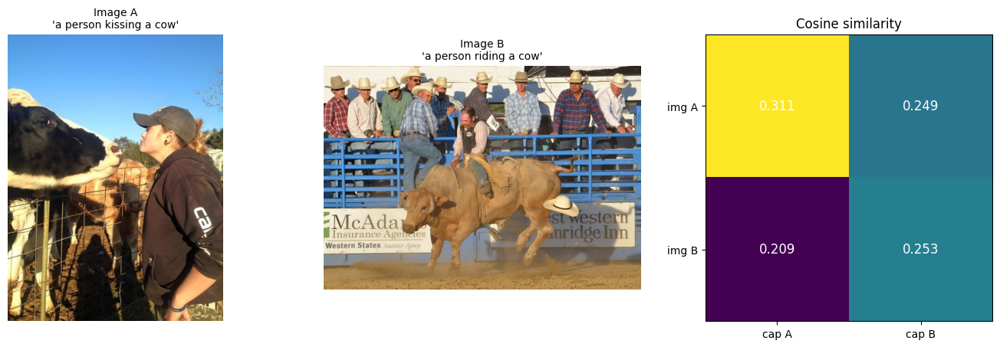
--- SUCCESS: set 4 ---
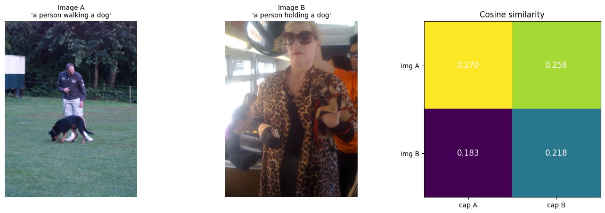
--- FAILURE: set 9 ---
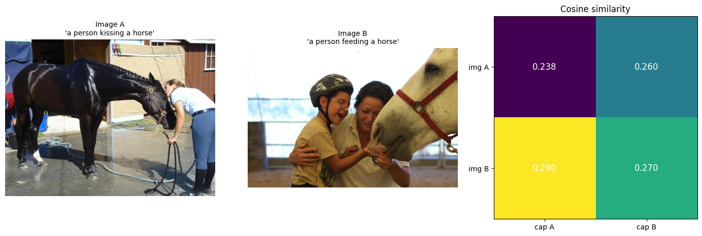
--- FAILURE: set 1 ---
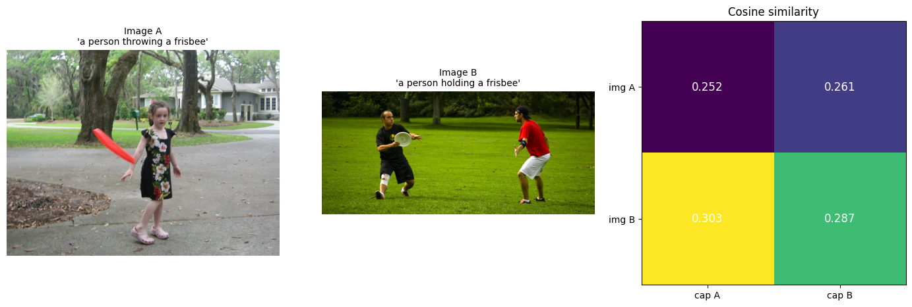
--- FAILURE: set 3 ---
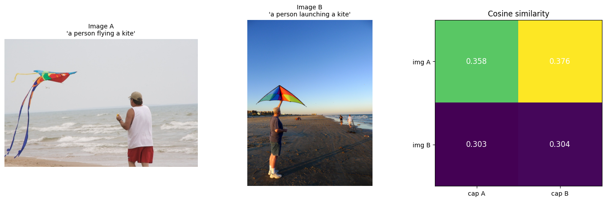
For the 12 comparison sets (24 images), CLIP ViT-B/32 chose the correct caption for 15 of 24 images (62.5%, 95% CI 42.7–78.8%) and matched both images correctly in 5 of 12 sets (sets 2, 4, 5, 7 and 12). Both figures are above their chance levels of 50% and 25%, but the confidence interval for accuracy includes chance, so the results are compatible with either a modest ability or none at all at this sample size. The caption-to-image direction gave a similar score (14/24), and only one set had all four comparisons correct. The margins in the 2 × 2 similarity matrices were very small (mean 0.010 cosine); four images were decided by less than 0.005, and even the incorrect choices were never wrong by more than about 0.022, while the clearest successes (set 5, kissing vs riding a cow, and set 10, loading a car) reached about 0.06. The seven sets with an error showed two patterns: in five of them (sets 3, 6, 8, 10 and 11) one caption was preferred for both images, and in two (sets 1 and 9) each image preferred the other image's caption. Many of the failures involve actions that overlap or are hard to separate visually, such as throwing vs holding a frisbee, flying vs launching a kite, and kissing vs feeding a horse, so label ambiguity is a likely contributor, and some successes coincide with large differences in scene, so CLIP may be using context as well as the action. The text descriptions sharing an object remained highly similar despite their different actions: captions in the same set had a mean cosine similarity of 0.895 (range 0.813–0.951), compared with 0.714 for captions about different objects, and for 22 of 24 captions the most similar other caption was the one with the same object. The ranges overlap (the most similar different-object pair reached 0.929), so the separation is not perfect, but the two images within a set were much less similar to each other (0.602) than their captions were, which means that each decision rests on a small difference in the text. As a reference point, CLIP identified the object itself in 20 of 24 images (83.3%) in a 12-way test, which is much higher relative to chance than its action discrimination, although the two tests are not directly comparable. Overall, the results are consistent with the hypothesis that the shared object dominates the representation and the action contributes a weak signal, but with only 12 sets, one model and some noise in the dataset labels, they do not establish that CLIP fails at this task, nor that it succeeds.
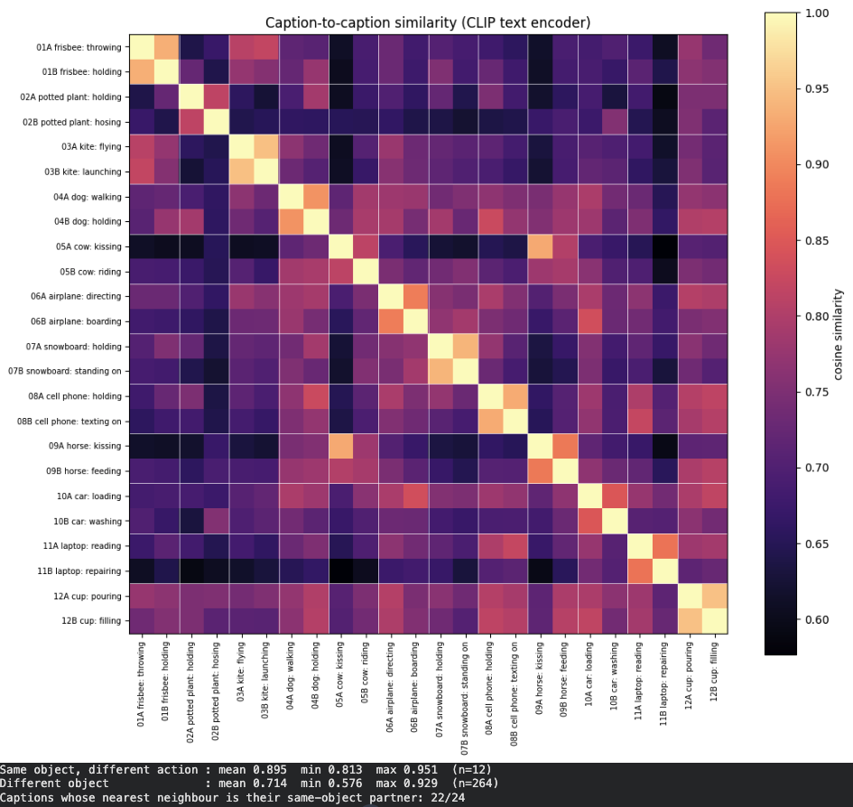
Part 3(Task 3)
Approach 1:
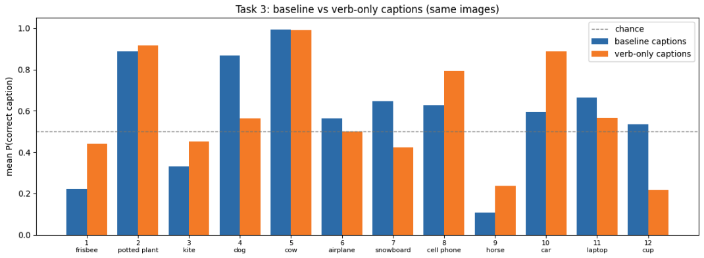
The first controlled change tested the explanation that the object words shared by the two captions in a set dilute the action word, which would make the captions hard to tell apart. Every caption was reduced to its verb ("a person riding a cow" became "a person riding"), with a trailing preposition dropped (for example "texting on" became "texting"), while the images, the model, the sets, the preprocessing and the matching rule stayed fixed. The rule for judging the result was set beforehand: the change counts as helping or hurting only if the 95% bootstrap interval for the change in accuracy, resampling sets, excludes zero. Accuracy went from 15/24 (62.5%) with the original captions to 14/24 (58.3%) with verb-only captions, a change of −4.2 percentage points (95% CI −33.3 to +25.0), and the mean probability assigned to the correct caption was essentially unchanged (0.587 vs 0.582; change −0.004, 95% CI −0.115 to +0.102), so under the pre-set rule the change has no detectable effect. The number of sets with both images correct stayed at 5 of 12, but the sets were different ones: sets 8, 10 and 11 became both-correct, while sets 4, 7 and 12 lost that status, and four images moved from wrong to right while five moved from right to wrong (sign test p = 1.0, approximate because the two images in a set are not independent). Individual sets changed substantially in both directions, for example set 4 (walking vs holding a dog) fell from 0.87 to 0.57 in the probability of the correct caption and set 12 from 0.53 to 0.22, whereas sets 1, 3 and 9 rose but stayed below 0.5. The mean similarity between the two captions of a set fell only from 0.895 to 0.853, because both captions still share "a person" and the sentence frame, so the manipulation separated the captions only modestly. These results neither support nor rule out the dilution explanation. Alternative explanations include that verb-only fragments are unnatural captions, so changes may reflect the odd wording; that dropping the object removes an anchor for verbs such as "holding", which are vague on their own; and that some of the original misses come from the images or labels (overlapping actions, scene differences, label noise), which a caption change cannot fix. The evidence is limited by the small number of sets (one image changes accuracy by about 4 points), the use of a single model and a single random draw of sets, and the wide confidence intervals, which are compatible with both a sizable gain and a sizable loss.
Approach 2:
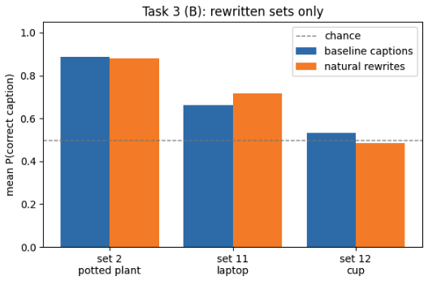
The second check tested whether awkward wording alone could explain some of the baseline misses, since the captions come directly from HICO's verb names and a few read unnaturally. Three captions were rewritten under a rule fixed before scoring: the only allowed edits were adding a preposition or particle that the verb needs, or replacing HICO's verb with its everyday equivalent, with no new nouns, adjectives or other visual details so that any change could not come from extra information in the text. The changed captions were "a person hosing a potted plant" to "a person watering a potted plant" (set 2), "a person reading a laptop" to "a person reading on a laptop" (set 11) and "a person pouring a cup" to "a person pouring into a cup" (set 12), and the other 21 captions were identical to the baseline; the images, model, sets and metrics were fixed, and a control confirmed that the nine sets with no changed caption scored exactly as before. Image-to-description accuracy went from 15/24 (62.5%) to 14/24 (58.3%), the number of sets with both images correct from 5 to 4, the caption-to-image score from 14/24 to 15/24, and the mean probability of the correct caption stayed at 0.587. Of the three rewritten sets, set 2 was essentially unchanged (0.887 to 0.880); set 11 rose from 0.663 to 0.717 but its second image was still wrong; and in set 12 one image moved from right to wrong, although the margin there changed only from +0.0014 to −0.0006 in cosine similarity, a difference at the level of a tie, so that set was never a robust success. In total no image moved from wrong to right, one moved from right to wrong and 23 of 24 were unchanged, so the rewrites had little to no effect. This suggests that awkward phrasing is unlikely to be the main reason for the baseline misses, but the check is very limited: only three captions in three sets could change, so it says nothing about the other 21 captions, and it was chosen after the baseline and the verb-only results had been seen, which allows for some bias in which captions were considered awkward. Other explanations, such as scene and background cues, overlapping or ambiguous actions, and label noise in the dataset, were not tested by this change and remain open.